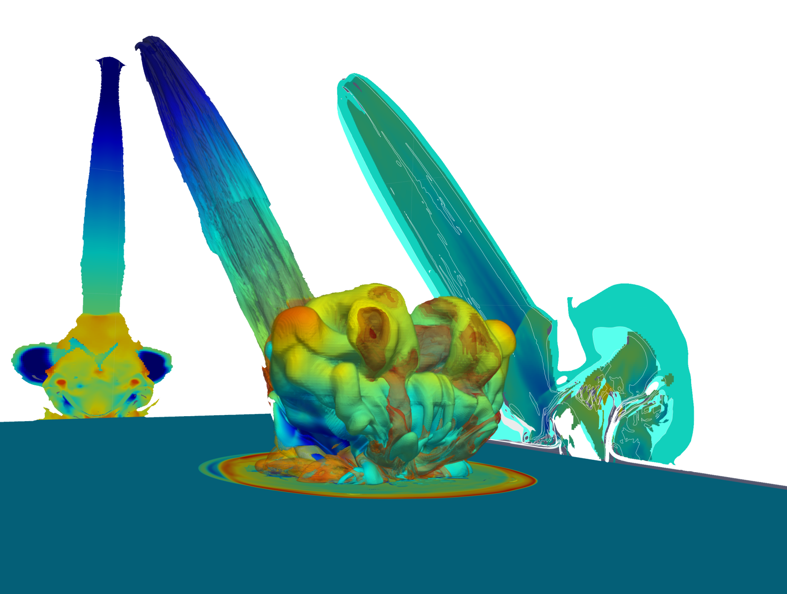
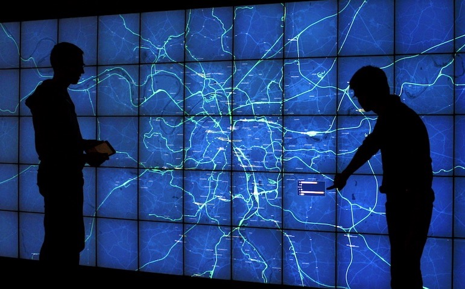
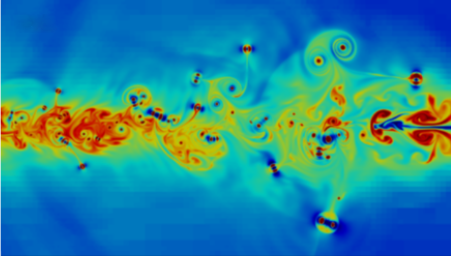
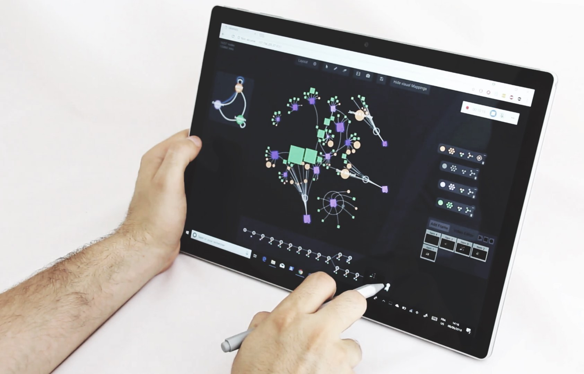
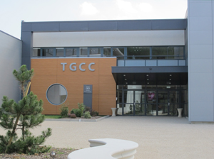
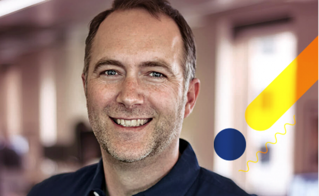

Journée Visu 2020
Mardi 9 juin 2020, Très grand centre de calcul (TGCC) du CEA Bruyères-le-Châtel (Essonne)
   
La journée annuelle du groupe de travail Visualisation du groupement de recherche informatique géométrique et graphique, réalité virtuelle et visualisation (GdR IG-RV) aura lieu le mardi 9 juin 2020 au Très grand centre de calcul (TGCC) du CEA à Bruyères-le-Châtel (Essonne). Cette journée, co-organisée par le CEA et l'INRIA avec le soutien de plusieurs partenaires, a pour vocation de rassembler les acteurs académiques et industriels de la communauté française en visualisation, afin d'échanger sur les problématiques et les enjeux actuels et futurs de la visualisation. Cette journée couvre entre autres la visualisation scientifique (SciVis) et la visualisation d'information (InfoVis), appliquées dans de nombreux domaines tels que la simulation numérique, la médecine personnalisée, la cartographie ou encore l'intelligence artificielle.
Accès

La journée se déroulera au Très grand centre de calcul (TGCC) du CEA à l'adresse suivante: 2 rue de la Piquetterie, 91680 Bruyères-le-Châtel.
Vous souhaitez venir en voiture?
Téléchargez le plan d'accès au TGCC, avec la localisation des parkings.
Vous souhaitez venir en bus?
À partir de l'aéroport Charles-de-Gaulle : RER B > arrêt : Massy-Palaiseau > Bus Albatrans 91.03 (Dourdan) arrêt : Briis-sous-Forges, Gare autoroutière puis Bus Albatrans 91.04 (Evry) arrêt : Bruyères-le-Châtel, Campus Teratec.
À partir de la gare TGV de Massy-Palaiseau > Bus Albatrans 91.03 (Dourdan) arrêt : Briis-sous-Forges Gare autoroutière puis Bus Albatrans 91.04 (Evry) arrêt : Bruyères-le-Châtel, Campus Teratec.
Par le RER C > arrêt : Breuillet-Bruyères-le-Châtel, puis Bus Ormont Transport 68.01 arrêt : Bruyères-le Châtel, Teratec.
INSCRIPTION
La journée Visu 2020 est gratuite et ouverte à tous dans la limite des capacités d'accueil fixée par le CEA. Pour assister à cette journée, inscrivez-vous avant le mardi 26 mai 2020.
>>>>>>>>>> Pour vous inscrire cliquez ici et remplissez ce formulaire. <<<<<<<<<<<
Appel à contribution
Sont admises des *soumissions sur résumé*, qui présentent des travaux originaux. Il peut s'agir de :
- travaux de recherche finalisés ou en cours, de projets ANR, européens ou autres, de retours d'expériences industriels, etc.
- travaux qui ont été soumis* mais pas acceptés, et qui seront donc présentés dans le but de les améliorer en vue d'une nouvelle soumission ou tout simplement de « valoriser » l'investissement.
- travaux non encore soumis, et qui seront présentés en vue d'avoir un premier retour de la communauté.
La date limite de soumission est fixée au lundi 11 mai 2020.
Modalités de soumission
La soumission est un fichier PDF de 2 pages maximum, plus une page additionnelle incluant les figures en couleur, tableaux et éléments d'illustration supportant les travaux. Les feuilles de style MS Word et LaTeX peuvent être téléchargées ici.
Format de la présentation
Lors de la journée Visu, vous pourrez présenter votre soumission sous trois formes, en français ou en anglais :
- Présentation orale
- Poster
- Démonstration
Lors de votre soumission, merci d'indiquer quelle(s) forme(s) de présentation vous choisissez. Vous pouvez combiner jusqu'à deux formes de présentation. Il est possible que nous vous suggérions des modifications en fonction des contraintes de temps et de place. Les soumissions peuvent être rédigées en français ou en anglais et ne sont pas anonymes. Un espace sera mis à disposition pour les posters et les démonstrations. Si vous souhaitez faire une démonstration, merci d'inclure dans le formulaire un bref descriptif de celle-ci ainsi que de vos besoins matériels (chaises, support de poster, table ou électricité).
Thématique
Les thématiques couvertes par l'appel à contribution sont variées et incluront :
- visualisation scientifique
- visualisation d’information
- visualisation de grandes masses de données et visualisation haute performance
- visualisation pour la médecine personnalisée
- visualisation et intelligence artificielle
- design de visualisation
- visualisation et storytelling
- visualisation in-situ
- visualisation analytique
- perception visuelle et visualisation
- interactions dans un contexte d'analyse visuelle
- évaluation de la visualisation
- couplage simulation / visualisation
- visualisation de données relationnelles (par ex.réseaux sociaux)
- fouille visuelle des données et techniques de navigation dans les entrepôts de données
- architectures client-serveur pour la visualisation de données distantes
- visualisation collaborative (colocalisée ou à distance, synchrone ou asynchrone)
- visualisation sur dispositifs nouveaux (par ex. murs d'écrans, tablettes tactiles, montres intelligentes) et avec des dispositifs d'interaction non conventionnels (par ex. capteurs 3D)
- méthodes topologiques pour la visualisation
- visualisation de données géolocalisées
- visualisation de données biologiques et moléculaires
- visualisation de données incertaines
>>>>>>>>>> Pour contribuer cliquez ici et remplissez ce formulaire. <<<<<<<<<<<
KEYNOTE

Speaker
Jeffrey Heer
Title
Visualization is not enough
Résumé
We are witnessing both increased application and public skepticism of data-driven methods for decision making and automation. Within this regime, data visualization — as a technology — seems well-poised to provide valuable insight and oversight. Though arguably a *necessary* component in the appropriate use of data, visualization by itself is far from *sufficient*. Data visualization — as a community of practice — sits at the confluence of many “source” disciplines, including cartography, computer science, graphic design, psychology, and statistics. The practice of principled interdisciplinary thinking is perhaps our greatest asset, suggesting avenues for our community to have outsized, beneficial impact in the world. In this talk I will consider the obvious yet potentially contrarian view that *visualization is not enough* — and why this realization is liberating for both research and practice. I will point to vanguards and future prospects in “visualization” research that I believe exemplify real-world relevance and require rich intellectual integration: accessibility, interactive visualization systems, reasoning under uncertainty, and interactions with machine learning models. One guiding heuristic we might consider is the degree to which we not only benefit from, but successfully contribute back to, the adjacent disciplines that fuel our endeavors. Our community is uniquely positioned to contribute to issues of critical importance to society. Let’s consider how we should rise to the challenge!
Jeffrey Heer’ Capstone “Visualization is Not Enough” slides are available here.
Biographie
Jeffrey Heer is the Jerre D. Noe Endowed Professor of Computer Science & Engineering at the University of Washington, where he directs the Interactive Data Lab and conducts research on data visualization, human-computer interaction and social computing. The visualization tools developed by Jeff and his collaborators (Vega, D3.js, Protovis, Prefuse) are used by researchers, companies, and thousands of data enthusiasts around the world.
Jeff's research papers have received awards at the premier venues in Human-Computer Interaction and Visualization (ACM CHI, ACM UIST, IEEE InfoVis, IEEE VAST, EuroVis). Other honors include MIT Technology Review's TR35 (2009), a Sloan Fellowship (2012), an Allen Distinguished Investigator Award (2014), a Moore Foundation Data-Driven Discovery Investigator Award (2014), and the ACM Grace Murray Hopper Award (2016).
Jeff holds B.S., M.S., and Ph.D. degrees in Computer Science from UC Berkeley, whom he then betrayed to join the Stanford faculty (2009–2013). He is also a co-founder of Trifacta, a provider of interactive tools for scalable data transformation.
More information about Jeffrey Heer.
PROGRAMME
| Horaire | Description |
|---|---|
| 8:30 - 9:15 | Accueil |
| 9:15 | Introduction de la journée |
| 9:30 | Conférence invitée: ► Visualization is not enough Jeffrey Heer. |
| 10:45 | Pause-café + posters et démonstrations |
| 11:30 | Session 1 |
| 12:55 | Pause déjeuner |
| 13:55 | Session 2 |
| 15:05 | Pause-café + posters et démonstrations |
| 15:50 | Session 3 |
| 17:00 | Session 4 |
| 18:00 | Conclusions de la journée |
POSTERS ET DEMONSTRATIONS
Posters
Posters + démonstrations
ORGANISATEURS 2020
Directeur de Recherche, responsable de l'équipe-projet ILDA, commune entre INRIA, CNRS et Université Paris-Saclay
Précédentes Journées Visu
- Journée Visu 2019: 17 mai 2019, Télécom ParisTech, Paris
- Journée Visu 2018: 25 mai 2018, EDF Lab, Palaiseau
- Journée Visu 2017: 7-8 juin 2017, IFP Energies nouvelles, Rueil-Malmaison.
- Journée Visu 2014 : 7 novembre 2014, Télécom ParisTech, Paris
- Journée Visu 2013 : 6 novembre 2013, Institut de Biologie Physico-Chimique, Paris
- Journée Visu 2012: 25 septembre 2012, Télécom ParisTech, Paris
- Journée Visu 2011: 12 octobre 2011, CEA, Bruyères-le-Châtel
- Journée Visu 2010: 5 octobre 2010, EDF, Clamart